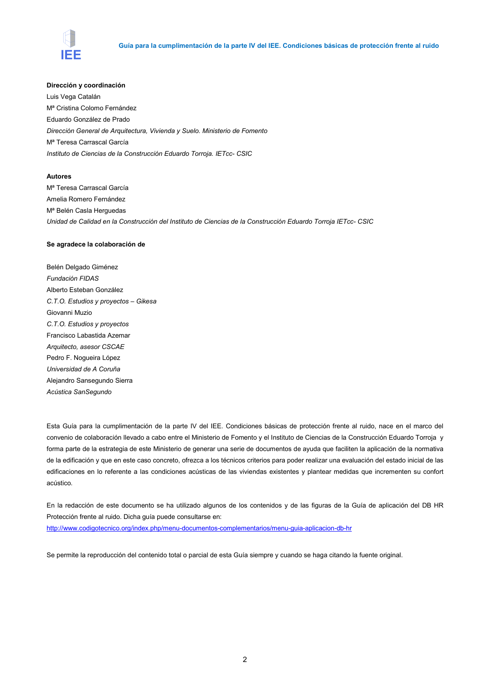

GUIA · Página 2 · versión 2016-11-01
SHA256: 813669d3066c0ff79457d57b80b0512a4fbb248bc5db1f7baf473c369a064738 · página física 2 de 65 · métodos de encabezado
solo si están cotejados.
Formatos: Markdown · JSON de bloques · PDF p. 2 · imagen PNG
Guía para la cumplimentación de la parte IV del IEE. Condiciones básicas de protección frente al ruido 2 Dirección y coordinación Luis Vega Catalán Mª Cristina Colomo Fernández Eduardo González de Prado Dirección General de Arquitectura, Vivienda y Suelo. Ministerio de Fomento Mª Teresa Carrascal García Instituto de Ciencias de la Construcción Eduardo Torroja. IETcc- CSIC Autores Mª Teresa Carrascal García Amelia Romero Fernández Mª Belén Casla Herguedas Unidad de Calidad en la Construcción del Instituto de Ciencias de la Construcción Eduardo Torroja IETcc- CSIC Se agradece la colaboración de Belén Delgado Giménez Fundación FIDAS Alberto Esteban González C.T.O. Estudios y proyectos – Gikesa Giovanni Muzio C.T.O. Estudios y proyectos Francisco Labastida Azemar Arquitecto, asesor CSCAE Pedro F. Nogueira López Universidad de A Coruña Alejandro Sansegundo Sierra Acústica SanSegundo Esta Guía para la cumplimentación de la parte IV del IEE. Condiciones básicas de protección frente al ruido, nace en el marco del convenio de colaboración llevado a cabo entre el Ministerio de Fomento y el Instituto de Ciencias de la Construcción Eduardo Torroja y forma parte de la estrategia de este Ministerio de generar una serie de documentos de ayuda que faciliten la aplicación de la normativa de la edificación y que en este caso concreto, ofrezca a los técnicos criterios para poder realizar una evaluación del estado inicial de las edificaciones en lo referente a las condiciones acústicas de las viviendas existentes y plantear medidas que incrementen su confort acústico. En la redacción de este documento se ha utilizado algunos de los contenidos y de las figuras de la Guía de aplicación del DB HR Protección frente al ruido. Dicha guía puede consultarse en: http://www.codigotecnico.org/index.php/menu-documentos-complementarios/menu-guia-aplicacion-db-hr Se permite la reproducción del contenido total o parcial de esta Guía siempre y cuando se haga citando la fuente original.
